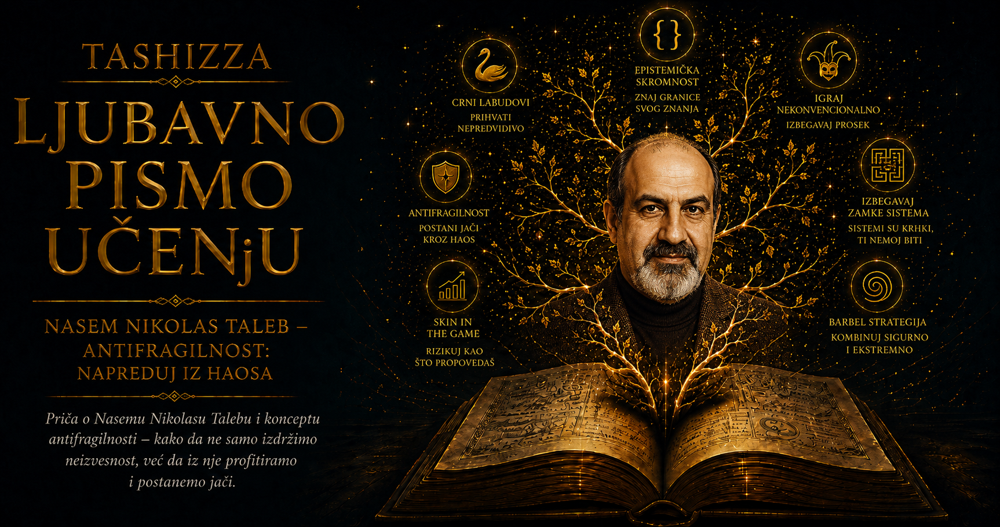

Ljubavno pismo učenju

Nasim Nikolas Taleb odrastao je u svetu u kome su se obrazovanje, porodično pamćenje, mediteranska istorija i politička nestabilnost neprestano dodirivali. Rođen je 1960. godine u Amjunu u Libanu, u grčko-pravoslavnoj porodici čiji su članovi učestvovali u javnom i kulturnom životu zemlje. Dom mu je pružao sigurnost knjiga, jezika i razgovora, ali je prostor izvan njega nosio dugu istoriju carstava, verskih zajednica, trgovine i sukobljenih predstava o pripadnosti.
U detinjstvu je upoznao kosmopolitski Liban u kome su se susretali arapski, francuski i engleski jezik, istočnomediteranski običaji i zapadne obrazovne ustanove. Takvo okruženje podsticalo je radoznalost koja nije poštovala stroge granice među disciplinama. Taleb je rano razvio sklonost prema istoriji, filozofiji, klasičnim jezicima i matematici, oblastima koje će se kasnije u njegovim knjigama preplitati sa finansijama, književnošću, medicinom i pitanjima moralne odgovornosti.
Libanski građanski rat počeo je 1975. godine, dok je bio tinejdžer. Poredak koji je delovao čvrsto raspao se u mrežu sukoba, promenljivih savezništava i svakodnevnih opasnosti. Ulice poznatog grada dobijale su nove granice, a pripadnost zajednici mogla je preko noći promeniti čovekov položaj. Takvo iskustvo ostavilo je dublji trag od bilo koje kasnije teorijske lekcije: pokazalo mu je da se stabilnost često procenjuje prema površini, dok se ispod nje dugo skupljaju napetosti koje većina ljudi ne ume da vidi.
Rat ga je učinio podozrivim prema ljudima koji istoriju opisuju kao uredan sled uzroka i posledica. Oni koji žive posle događaja lako pronalaze objašnjenje njegovog nastanka, dok ljudi koji su mu prethodili često nisu znali koja će od brojnih napetosti postati presudna. Taleb će kasnije upravo iz tog iskustva razvijati trajno nepoverenje prema samouverenim prognozerima i prema pričama koje neizvesnu prošlost, posmatranu iz budućnosti, pretvaraju u privid neizbežnosti.
Školovanje je nastavio izvan Libana. Studirao je u Francuskoj, a potom u Sjedinjenim Državama, gde je stekao poslovno obrazovanje i doktorat iz menadžmenta. Akademsko okruženje pružilo mu je matematički jezik za pitanja koja su ga već zaokupljala, ali ga nije pretvorilo u disciplinovanog sledbenika jedne škole. Čitao je široko i nelinearno, vraćajući se antičkim skepticima, stoicima, istoričarima, matematičarima i književnicima, jer je smatrao da se ozbiljno razumevanje neizvesnosti ne može zatvoriti u granice jednog univerzitetskog odseka.
Posebno su ga privlačili mislioci koji su upozoravali na granice sigurnog zaključivanja. Od skeptika je preuzimao uzdržanost pred tvrdnjama koje prevazilaze dokaze, od Seneke razmišljanje o pripremi za gubitak, a od Karla Popera svest da beskrajno nizanje potvrda ne može tvrdnji pružiti snagu jednog ozbiljnog pokušaja pobijanja. Čitao je i stare tekstove koji su preživeli vekove, verujući da trajanje nekog dela pruža informaciju koju trenutna popularnost ne može da zameni.
Po završetku studija ušao je u svet finansijskih tržišta i radio kao trgovac derivatima i stručnjak za kvantitativne rizike. Njegovo radno okruženje bilo je ispunjeno promenama cena, kamatnim stopama, opcijama i modelima čija je svrha bila da neizvesnu budućnost prevedu u merljiv rizik. Finansijska industrija osamdesetih i devedesetih godina sve snažnije se oslanjala na računare i matematičke formule, pa je tehnička sofisticiranost podsticala uverenje da se opasnost može precizno izračunati.
Taleb je modele poznavao iznutra i umeo je da ih koristi. Njegova stručna knjiga Dynamic Hedging bavila se praktičnim upravljanjem rizikom opcija i bila namenjena ljudima koji svakodnevno donose odluke na tržištu. Upravo mu je blizina modelima omogućila da uoči njihove slabe tačke. Formula može biti matematički dosledna unutar pretpostavljenog sveta, dok se stvarno tržište povremeno ponaša na način koji te pretpostavke čini neupotrebljivim.
Berzanski slom u oktobru 1987. godine postao je jedno od presudnih iskustava njegove finansijske karijere. Tržišta su za jedan dan pretrpela promene koje su standardni modeli smatrali krajnje malo verovatnim, a pozicije osmišljene da dobijaju pri velikim kolebanjima mogle su naglo porasti. Taleb je iz tog događaja izvukao pouku koja će prožeti njegovo kasnije delo: nekoliko izuzetnih dana može odlučiti rezultat mnogih godina, pa strategija sa nizom malih dobitaka može skrivati jedan budući gubitak sposoban da ih sve izbriše.
Iskustvo velikog tržišnog uspeha nije pretvorio u legendu o sopstvenoj nepogrešivosti. Pisao je o promašajima, pogrešnim analogijama i trenucima u kojima je očekivao da će novi poremećaj ličiti na prethodni. Krize nemaju obavezu da ponove poznatu putanju, a čovek koji je jednom dobro procenio opasnost može upravo zbog tog uspeha postati previše siguran u sledeću procenu. Taleb je tako sopstvenu karijeru koristio kao laboratoriju za posmatranje načina na koji sreća, veština i naknadno pripovedanje stvaraju reputaciju.
Godine provedene među trgovcima pružile su mu čitavu galeriju ljudskih karaktera. Posmatrao je ljude koji su slučajnu dobit pripisivali genijalnosti, dok su gubitke objašnjavali nepredvidivim okolnostima. Video je rukovodioce čiji su rezultati izgledali stabilno zato što su retke rizike preneli u budućnost, kao i stručnjake koji su zadržavali ugled bez obzira na posledice svojih saveta. Iz tih iskustava nastalo je njegovo trajno pitanje o asimetriji odgovornosti: ko prima nagradu kada odluka uspe i ko plaća cenu kada propadne?
Prva široko zapažena knjiga iz njegovog ciklusa Incerto, Prevareni slučajnošću, spojila je trgovačke anegdote, verovatnoću, filozofiju, autobiografske prizore i kritiku ljudske potrebe da slučaj pretvori u smislenu priču. U njenom središtu nalazila se i moralna nelagodnost, jer ljudi rado prisvajaju zasluge za povoljne okolnosti, dok tuđi neuspeh često objašnjavaju nedostatkom sposobnosti ili karaktera. Taleb je istu sumnju usmeravao prema sopstvenom uspehu, svestan da čovek koji proučava slučajnost ne dobija privilegiju da stoji izvan njenog domašaja.
Knjiga Crni labud, objavljena 2007. godine, donela mu je svetsku prepoznatljivost. Finansijska kriza koja je usledila naredne godine pretvorila ga je u jednog od najtraženijih javnih tumača rizika. Mediji su ga često predstavljali kao čoveka koji je predvideo slom, iako je njegova poruka bila usmerena protiv preteranog oslanjanja na precizna predviđanja. On je ukazivao na zaduženost, skrivene rizike, međuzavisnost institucija i podsticaje koji su ljudima omogućavali da zadrže dobitak, a velike gubitke prenesu na društvo.
Svetska slava pojačala je i osobine koje su čitaoci kod njega doživljavali sasvim različito. Talebov stil spaja tehničku preciznost, mediteransku slikovitost, aforizam, autobiografsku digresiju i otvorenu polemiku. Njegova netrpeljivost prema praznoj učenosti i autoritetu bez posledica privukla je ljude umorne od samouverenih prognozera. Istovremeno, način na koji se obračunava sa protivnicima često prelazi u lični prezir i ostavlja premalo prostora za delimično neslaganje, običnu grešku ili dobronameran prigovor.
U toj protivrečnosti nalazi se važan deo njegove ličnosti. Taleb traži skromnost pred neizvesnošću, a u javnim raspravama ume da nastupi sa izrazitom sigurnošću. Kritikuje društveni status, premda je postao slavan autor; brani praktično znanje, a poseduje duboko akademsko obrazovanje; ceni tradiciju i istovremeno stvara nove pojmove. Te napetosti ne uklanjaju vrednost njegovih pitanja, ali čitaoca podsećaju da se filozofija ograničenog znanja lakše obrazlaže nego što se svakodnevno živi.
Među njegovim važnim intelektualnim saveznicima nalazio se matematičar Benoa Mandelbrot, tvorac fraktalne geometrije i dugogodišnji kritičar pojednostavljenih modela finansijskih promena. Mandelbrot je pokazivao da tržišta imaju grublju strukturu i veće ekstreme nego što standardne statističke slike pretpostavljaju. Taleb je u njemu prepoznao učitelja koji je decenijama bio spreman da ostane izvan glavnog toka zato što stvarni podaci nisu pristajali prihvaćenoj teoriji.
Njihovo intelektualno srodstvo počivalo je na ozbiljnom shvatanju retkih događaja, promena razmere i debelih repova raspodele. Istorija finansijskog tržišta ne može se razumeti ako se najveće promene uklone kao neugodni izuzeci, jer upravo one često nose najveći deo ukupnog dobitka ili gubitka. Mandelbrotov rad pružio je matematičku dubinu Talebovom iskustvu trgovca i pomogao mu da praktičnu sumnju prema modelima pretvori u širu teoriju krhkosti.
Taleb je finansijsku karijeru postepeno napuštao kako bi više vremena posvetio istraživanju, matematici i pisanju. Na Njujorškom univerzitetu radio je u oblasti inženjerstva rizika, proučavajući ekstremne događaje, posledice raspodela sa debelim repovima i mogućnost matematičkog prepoznavanja krhkosti. Iako je delovao unutar akademskog sveta, ostao je njegov nemiran kritičar, naročito kada su hijerarhija, broj publikacija i složen stručni jezik dobijali veću važnost od stvarne vrednosti ideje.
Njegov odnos prema stručnosti zbog toga zahteva nijansirano čitanje. Taleb duboko poštuje tehničko znanje koje se proverava u praksi i čije se greške mogu uočiti, dok je mnogo sumnjičaviji prema stručnjaku zaštićenom od posledica sopstvenih saveta. Hirurg se suočava sa opipljivim ishodom rada, kao što zanatlija ne može beskonačno skrivati loš proizvod iza uverljive prezentacije. Javni prognozer, nasuprot tome, može decenijama davati pogrešne procene i svako iznenađenje naknadno uklopiti u novu priču.
Iz takvog razmišljanja razvila se etika „kože u igri”. Taleb smatra da osoba koja odlukama može naneti štetu drugima mora biti izložena delu njihovih posledica. Savetnik koji dobija nagradu kada strategija uspe, a odlazi bez gubitka kada ona propadne, ima podsticaj da potcenjuje skrivene opasnosti. Autoritet stiče moralnu težinu tek kada sa sobom nosi odgovornost, pa kapetan koji poslednji napušta brod i graditelj spreman da živi ispod sopstvene građevine simbolizuju vezu između odluke i njene cene.
Taleb je ovo načelo povezivao i sa ličnim dostojanstvom. U govoru studentima Američkog univerziteta u Bejrutu govorio je o uspehu kao sposobnosti da se čovek uveče pogleda u ogledalo bez stida. Savetovao je mladima da ne pretvaraju život u trku za stavkama u biografiji i da biraju posao koji bi želeli da rade čak i kada bi već imali dovoljno novca. U tim rečima pojavljuje se njegova tiša strana, udaljena od polemičara koji javnim protivnicima često ne ostavlja ni trunku milosti.
Velika celina njegovih knjiga, nazvana Incerto, odražava njegov nesistematičan način mišljenja. Eseji, matematička objašnjenja, istorijski primeri, autobiografske slike i aforizmi vraćaju se istim pitanjima iz različitih uglova. Prokrustova postelja, zbirka kratkih misli, naslovom priziva grčki mit o čoveku koji je putnike nasilno prilagođavao svom krevetu. Taleb u toj slici prepoznaje naviku da stvarnost sakatimo kako bi pristala modelu, umesto da model menjamo prema stvarnosti.
Aforistički oblik odgovara njegovom temperamentu, jer jednom rečenicom može otvoriti pukotinu u ustaljenom načinu razmišljanja. Ipak, ista sažetost nosi opasnost da složeno pitanje prerano pretvori u presudu. Najbolji Talebovi aforizmi podstiču čitaoca da preispita sopstvenu sigurnost, dok slabiji ostavljaju utisak da je samouveren ton zauzeo mesto potpunijeg argumenta. Takva napetost između pronicljivosti i preterivanja prati i njegove javne nastupe.
Taleb sebe rado opisuje francuskom rečju flâneur, kao šetača koji prolazi gradom bez krute putanje i dopušta da mu slučaj otvori nova mesta, knjige i razgovore. Poznat je po dugim šetnjama, čitanju u kafeima i nastojanju da deo vremena sačuva od unapred određenog rasporeda. U toj navici njegova filozofija dobija svakodnevni oblik: život pretrpan obavezama zatvara vrata povoljnom iznenađenju, dok slobodan prostor omogućava radoznalosti da izabere neočekivani pravac.
Sa intelektualnom slobodom povezuje i snažnu telesnu disciplinu. Hodanje, vežbanje snage i povremeno intenzivno opterećenje za njega predstavljaju način da se apstraktna razmišljanja o stresu, meri i oporavku vrate u telo. Iskustvo lečenja od raka grla dodatno ga je suočilo sa granicama lakih priča o jačanju kroz teškoće. Neki udari čoveku donesu iskustvo i novu pažnju prema životu, dok drugi ostave samo štetu; zbog toga se snaga gradi pre velikog događaja, kroz odnose, fizičku sposobnost, rezerve i spremnost da se prihvati stručna pomoć.
Porodični život uglavnom čuva izvan javnosti, iako u govorima o uspehu naglašava značaj bliskih odnosa, prijateljstva i pripadnosti zajednici. U njegovom svetu bogatstvo i ugled ne pružaju sigurnost čoveku koji je ostao bez ljudi među kojima je voljen i potreban. Ta misao ublažava sliku grubog individualiste i pokazuje da Talebova samostalnost počiva i na mreži odnosa koju ne izlaže javnom spektaklu.
Mediteransko poreklo ostalo je važan deo njegovog intelektualnog identiteta. Istoriju Levanta, grčko-rimskog sveta i trgovačkih gradova posmatra kao nasleđe zajednica koje su vekovima preživljavale smene carstava, jezika i granica. Privlače ga lokalni običaji, zanatsko znanje, porodične mreže i ustanove koje su trajale bez velikog centralnog plana. U njihovoj dugovečnosti pronalazi iskustvo prilagođavanja koje savremeni sistem, opčinjen novinom i optimizacijom, često zanemaruje.
Njegova privrženost poreklu povremeno ga uvodi u oštre rasprave o istoriji, identitetu i jeziku Libana i Levanta. Takve polemike pokazuju koliko se lično sećanje teško odvaja od teorijskog argumenta. Rat ga je naučio da identitet može postati sredstvo podele, ali ga nije oslobodio potrebe da brani sopstveno razumevanje prostora iz kog je potekao. U tome se ponovo pojavljuje čovek pun napetosti: skeptik prema velikim pričama koji se strasno bori za priču o sopstvenom nasleđu.
Talebovi javni sukobi postali su gotovo zaseban deo njegove reputacije. Otvoreno napada ekonomiste, statističare, novinare, tehnološke optimiste i javne intelektualce čije ideje smatra opasnim. Njegov argument da učtivost ne može biti važnija od posledica pogrešne odluke zaslužuje pažnju, naročito kada uglađen nastup prikriva ozbiljnu neodgovornost. Istovremeno, dugotrajna navika sukoba može otežati sposobnost da se prepozna vredan prigovor i pretvoriti opravdani bes u novi oblik samouverenog autoriteta.
Njegov rad zato najviše pruža čitaocu koji ga ne pretvara ni u nepogrešivog proroka ni u karikaturu svadljivog pisca. Taleb postavlja ozbiljna pitanja o granicama modela, prikrivenoj krhkosti i ljudima koji upravljaju tuđim rizikom, ali njegova tumačenja i primene ostaju otvoreni za kritičku proveru. Čitati ga odgovorno znači primeniti njegovu sumnju i na njegove sopstvene tvrdnje.
Život među nepredvidivim događajima nije ga doveo do obećanja da se slučajnost može savladati. Građanski rat pokazao mu je da se društveni poredak može raspasti, finansijska tržišta da dugi niz uspeha može skrivati opasnost, a bolest da velike ideje o otpornosti imaju granicu u ranjivosti tela. Matematika mu je dala jezik kojim je te uvide pokušao da izrazi, dok su mu antički pisci ponudili meru dostojanstva i odgovornosti pred onim što čovek ne može kontrolisati.
Nasim Taleb ostaje mislilac čije su protivrečnosti podjednako poučne kao i njegovi pojmovi. Zagovara intelektualnu skromnost, a govori sa snažnim samopouzdanjem; sumnja u autoritete, a sam je stekao ogroman uticaj; veliča praktično iskustvo, a uživa u zahtevnoj matematici i erudiciji; čuva tradiciju, a savremenom jeziku daje nove reči. Njegova biografija zato podseća da velika ideja ne nastaje u savršeno doslednom čoveku, već u čoveku koji se čitavog života rve sa pitanjima koja je drugima postavio.
Za priču o učenju najdragoceniji ostaje njegov zahtev da znanje snosi posledice. Učenost se ne potvrđuje glasnoćom, titulom ni sigurnošću nastupa, nego spremnošću da se tvrdnja proveri, greška prizna i odgovornost ne prebaci na slabije. Taleb nas tako, ponekad i uprkos sopstvenom temperamentu, vraća jednom tihom obliku hrabrosti: sposobnosti da delujemo odlučno, a ipak sačuvamo svest o tome koliko stvarnosti još ne razumemo.